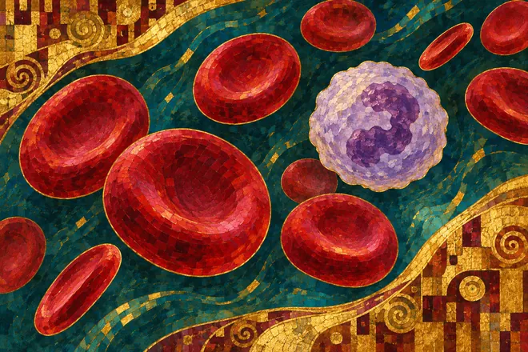
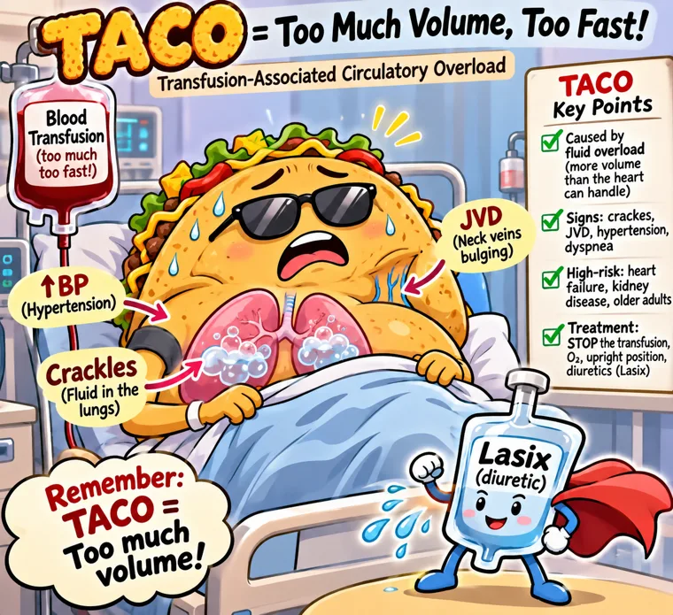
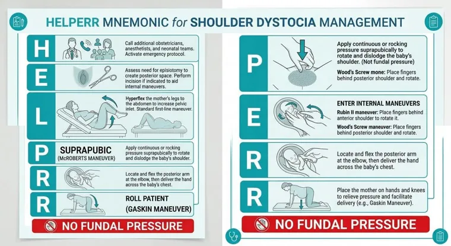
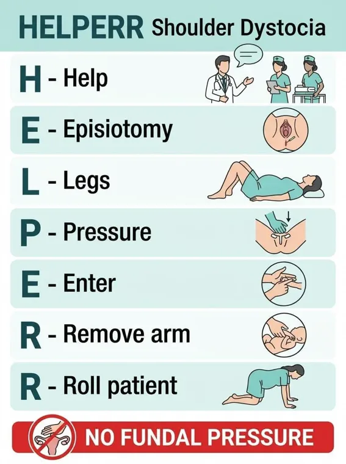

Start simple
Plain-language hematology, oncology and end-of-life notes.
Read the simple versionABSN Study Hub · Exam review
Choose a course and exam to review the decision cues, practice questions and pictures.


Plain-language hematology, oncology and end-of-life notes.
Read the simple versionDetailed comparisons, instructor emphasis and nursing priorities.
Read the comprehensive review
Assessment, interventions, safety and exam traps in readable cards.
Read the high-yield reviewAll 39 source pages, original course pictures, questions and rationales.
Read the complete guide
TACO · Fluid overload

Shoulder dystocia · Both pictures + correctionsFour unique documents and three downloaded images added November 10. The second copy of the simple NUR 258 document was identical, so it is listed once.
Original mosaic illustrations created with AI for the ABSN Study Hub.
Back to top ↑